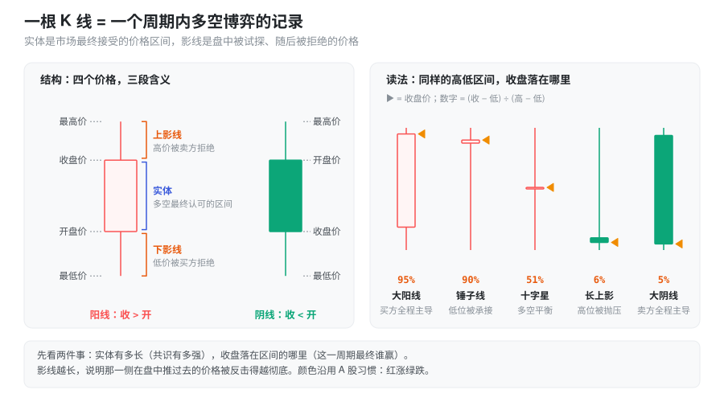
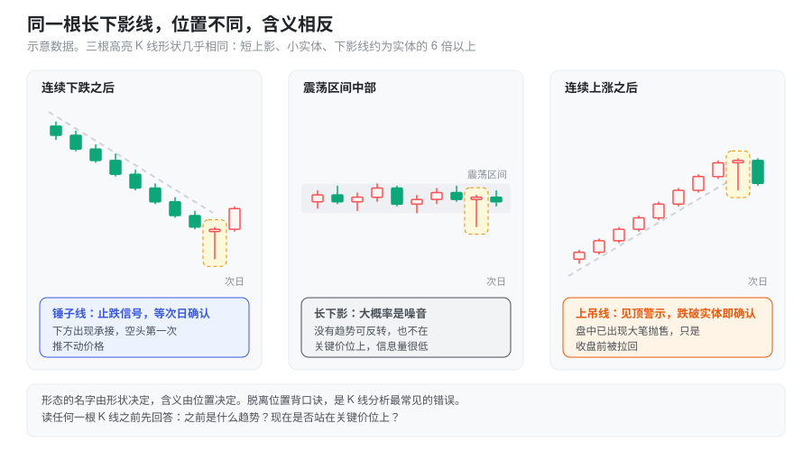
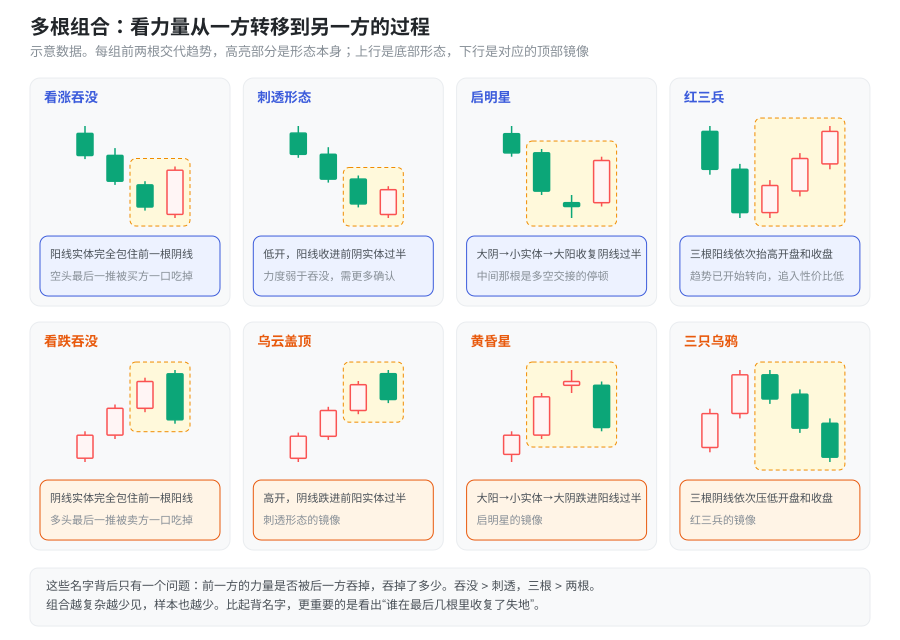
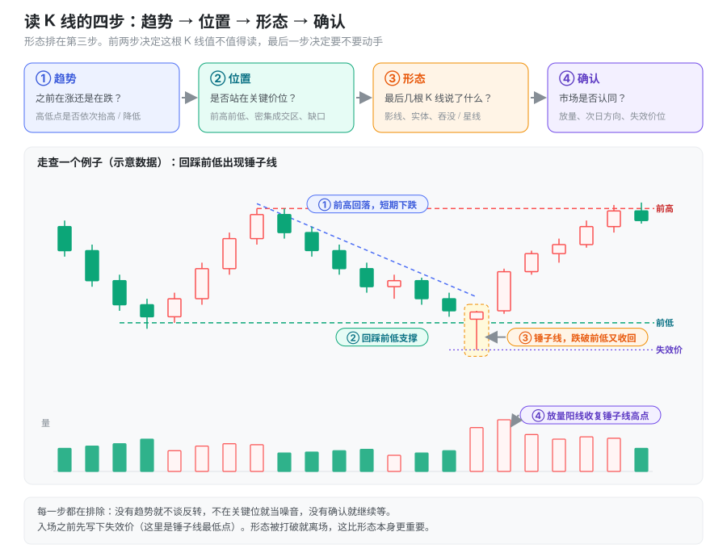

一天的交易里有成千上万笔成交，价格上下来回走。如果只看收盘价，“今天涨了 2%” 这句话丢掉了大部分信息：可能是开盘就一路上涨，也可能是先跌 5% 再被拉回来。这两种走势的收盘价一样，背后的买卖力量完全不同。
K 线要做的事，是把一个周期内的博弈过程压缩成一个可以快速比较的图形。读 K 线的难点不在认图，而在于：
- 同一个形状在不同位置意义相反。 下跌末端的长下影线是承接，上涨末端的长下影线可能是出货。
- 单根 K 线噪音很大。 多数 K 线不携带任何信号，只是随机波动。
- 口诀很多，范式很少。 “锤子线看涨”“吞没看反转”之类的规则背得再多，如果不知道什么时候该读、什么时候该忽略，就只能事后解释。
所以这一页不追求列全形态，而是建立一套固定的读法：先看结构，再看位置，然后看组合，最后等确认。
一根 K 线记录的是”哪些价格被接受、哪些被拒绝”
一根 K 线由开、高、低、收四个价格画成。把它理解成一份博弈记录，比记形状有用得多：
- 实体（开到收）：这一周期结束时，多空双方最终认可的价格区间。实体越长，单边共识越强。
- 影线（实体之外）：盘中有人把价格推到那里，但没能守住。上影线说明高价被卖方打回，下影线说明低价被买方接住。
- 收盘位置：收盘落在当日高低区间的哪里，回答了”这一周期最后谁赢”。可以用一个数量化：
(收 − 低) ÷ (高 − 低)，接近 100% 是买方完胜，接近 0 是卖方完胜。

有了这个抽象，常见单根形态就不用死记，都可以从”实体长短 + 影线方向 + 收盘位置”推出来：
| 形态 | 结构特征 | 背后的市场行为 | 底部参考意义 |
|---|---|---|---|
| 长下影线（锤子线） | 小实体在上端，下影线 ≥ 实体 2 倍 | 盘中遭遇抛售，但低位有承接 | 潜在止跌 |
| 倒锤子线 | 小实体在下端，长上影线 | 买方尝试向上突破，但未能维持涨幅 | 需要后续确认 |
| 十字星 | 开收几乎相同 | 多空暂时达到平衡 | 趋势可能变盘 |
| 大阳线 | 长实体，收在高点附近 | 买方明显占据优势 | 可能启动反弹 |
| 大阴线 | 长实体，收在低点附近 | 卖方明显占据优势 | 可能加速下跌 |
| 长上影线 | 收盘远离最高价 | 上方存在较强抛压 | 上涨受阻 |
表里最后一列写的是”参考意义”，因为单根 K 线本身没有方向，方向来自它所处的位置。
范式一：位置决定含义
同一根锤子形状的 K 线，放在三个位置上会得出三个不同结论：

- 连续下跌之后叫锤子线。空头一路推进，这一天第一次推不动，低价被大量买入。它是止跌的候选信号，还不是反转。
- 连续上涨之后同样的形状叫上吊线。它说明盘中已经有大笔抛售，只是收盘前被拉了回来。如果次日跌破它的实体，就是见顶确认。
- 震荡区间中部没有趋势可以反转，也不在关键价位上，这根 K 线基本可以忽略。
“关键价位”一般指这几类地方：前期高点和低点、长时间横盘形成的密集成交区、未回补的跳空缺口、重要均线。K 线信号落在这些位置，才说明多空在一个双方都在意的价格上交过手。
形态的名字由形状决定，含义由位置决定。 脱离趋势和位置去套口诀，是 K 线分析最常见的错误。
范式二：多根组合看力量转移
单根 K 线只记录一个周期。多根组合记录的是力量从一方转到另一方的过程，所以信号比单根强。常见组合可以归成三类，每一类在顶部都有一个镜像：

| 类别 | 底部形态 | 顶部镜像 | 判定要点 |
|---|---|---|---|
| 吞没类 | 看涨吞没 | 看跌吞没 | 后一根的实体完全覆盖前一根的实体，方向相反 |
| 刺透类 | 刺透形态 | 乌云盖顶 | 跳空开盘后反向运行，收进前一根实体的一半以上，但没有完全吞没 |
| 星线类 | 启明星 | 黄昏星 | 长实体 → 小实体（停顿）→ 反向长实体，第三根收复第一根实体过半 |
| 连续类 | 红三兵 | 三只乌鸦 | 三根同向实体，开盘和收盘依次抬高或压低 |
这些名字背后只有一个判断：前一方的力量被后一方吞掉了多少。 吞没比刺透强，因为收复的失地更多；三根组合比两根强，因为反方向的力量持续了更久。连续类形态出现时趋势往往已经走出一段，它更适合确认方向，不适合当作入场点。
范式三：确认，以及量价配合
K 线形态只是假设，需要后续走势来检验。常用的确认方式有三种：
- 次日方向：锤子线之后的阳线收盘高于锤子线最高点；上吊线之后的阴线跌破上吊线实体。
- 成交量：反转形态附近明显放量，说明有新的资金参与，而不只是卖盘暂时枯竭。缩量的反弹更容易失败。
- 失效价位：每个形态都有一个”被证伪”的价格。锤子线的失效价是它的最低点，看涨吞没的失效价是吞没阳线的最低点。价格跌破这里，形态就作废。
量价关系可以单独记成一张表：
| 价格 | 成交量 | 常见含义 |
|---|---|---|
| 上涨 | 放量 | 买方主动，趋势健康 |
| 上涨 | 缩量 | 跟风不足，上涨可能接近尾声 |
| 下跌 | 放量 | 恐慌或主动抛售，可能还没跌完；在低位也可能是最后一跌 |
| 下跌 | 缩量 | 卖盘衰竭，下跌动能减弱 |
把范式串起来：四步读法
把上面的范式按顺序排好，就是一套固定的读法。形态排在第三步，前两步决定这根 K 线值不值得读，最后一步决定要不要动手：

- 趋势：之前在涨还是在跌？看高低点是否依次抬高或降低。没有趋势就不谈反转。
- 位置：现在是否站在关键价位上？不在关键位的形态当作噪音。
- 形态：最后几根 K 线说了什么？用实体、影线、收盘位置去读，而不是对照名字。
- 确认：市场是否认同？等次日方向和成交量，并在入场前写下失效价。
图中的例子：价格从前高回落，回踩到前低附近，出现一根盘中跌破前低、收盘又收回的锤子线；次日放量阳线收复锤子线高点，四步都满足。失效价放在锤子线最低点，跌破就离场。